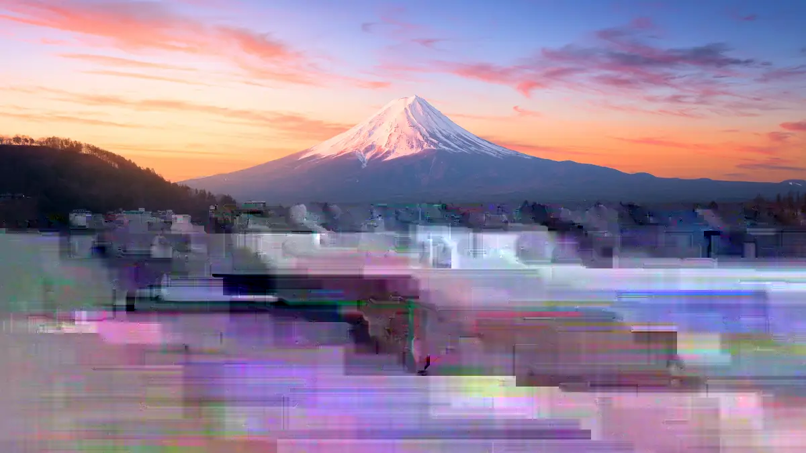
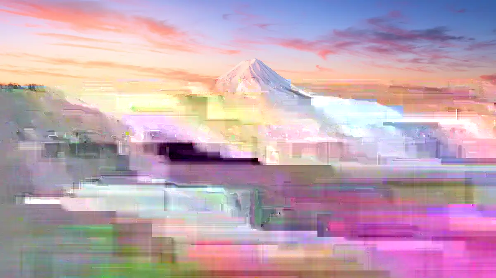
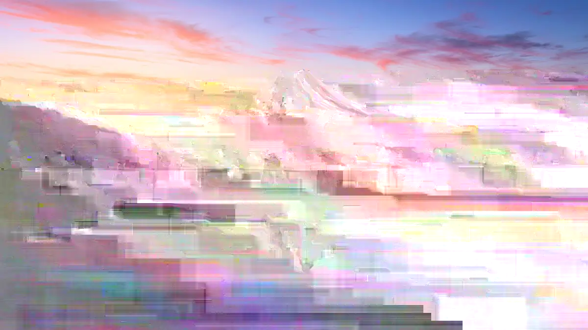
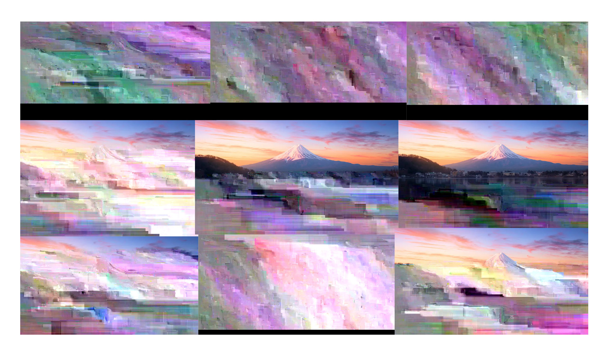

This is the first version of the project that I attempted.




Here is the first version of the project that wasn't like the other version (cherry) that gave me such conflicted feelings that I made another one afterwards. Sure, it looks like TV static of sorts, but I also felt like the image didn't convert well either.
The process went a bit like this → converting a image into code through a text editor → "glitching" the image through changing, duplicating, or deleting parts of the code → finalizing the images in photoshop
The sliding gallery above shows the best three images plus the finalized collage.